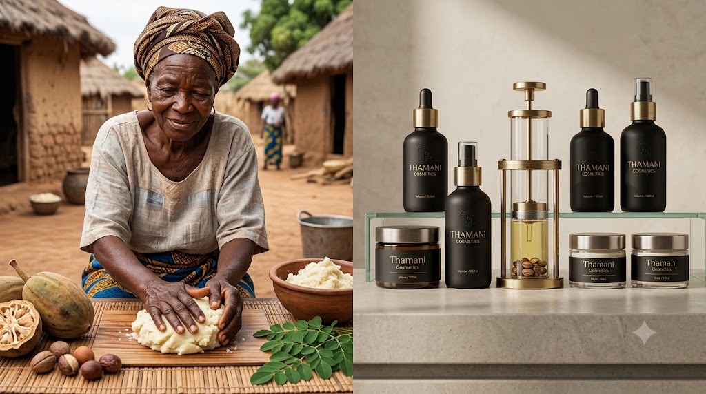

Rooted in Tradition, Formulated for Today
Thamani Cosmetics began with a simple belief: that Africa's oldest skincare secrets deserve a place in every modern routine. Our founders grew up watching their grandmothers press shea butter by hand and infuse oils with wild botanicals gathered from the savannah.
Today, we work directly with women-led cooperatives across West and East Africa to source shea, baobab, marula, and moringa — combining traditional knowledge with modern dermatological science to create products that are effective, ethical, and honest.
Every jar and bottle carries a story of heritage, sustainability, and care for the land that gives us so much.
Ethically Sourced
We partner directly with local cooperatives to ensure fair trade and sustainable harvesting.
Cruelty Free
None of our products are tested on animals, from formulation to final packaging.
Handcrafted Quality
Small-batch production ensures freshness, potency, and consistent quality in every product.